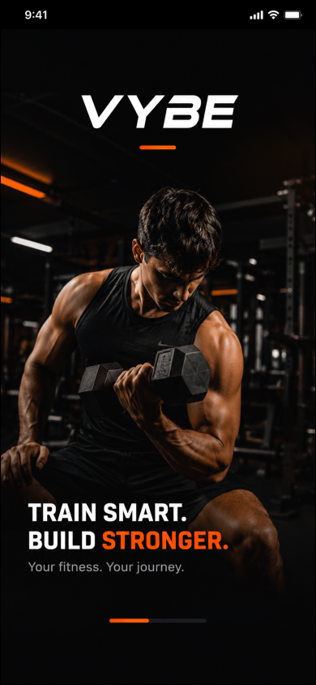
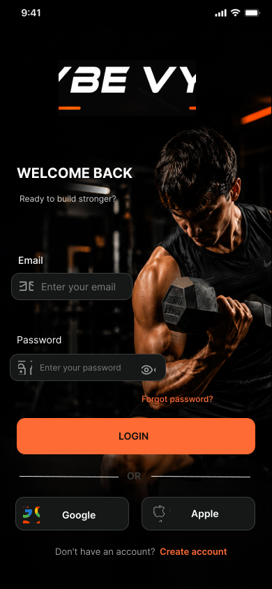
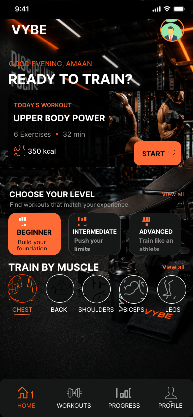
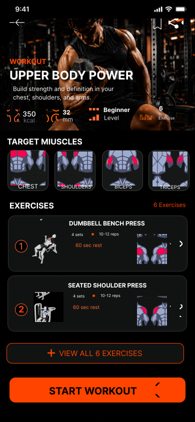
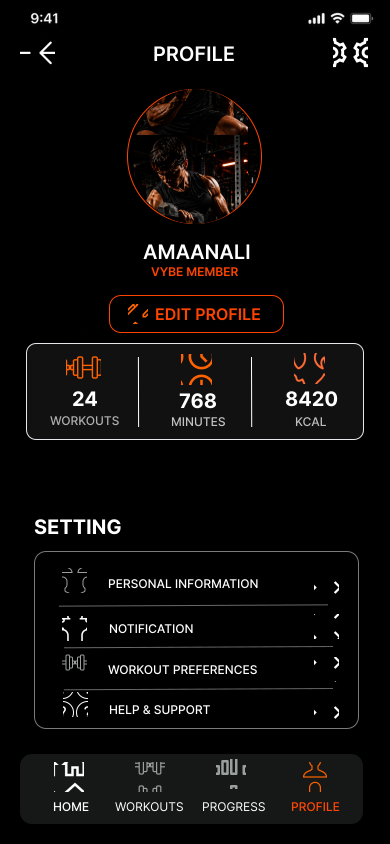

01 · MOBILE APP · UI/UX CASE STUDY
VYBE
Fitness App.
A modern fitness mobile app concept designed around a bold visual identity, focused workout discovery and a straightforward user experience.
01 / OVERVIEW
From a fitness idea to a
focused mobile experience.
VYBE explores a fitness app experience with a dark, bold and energetic visual direction. The supplied project covers introduction, authentication, home, workout details and profile experiences.
02 / DESIGN DIRECTION
Dark. Bold. Focused.
The visual language combines dark surfaces, strong fitness imagery, high-contrast typography and a warm orange accent.
Dark UIHigh-contrast foundation
Bold TypeClear visual hierarchy
Fitness ImageryImmediate context
Orange AccentEnergy and emphasis
03 / FINAL SCREENS
Six screens. One experience.
These are the actual VYBE designs supplied for this portfolio.




